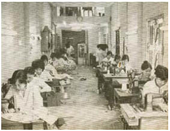

Cáo không hiểu chuyện gì đang xảy ra. Cảnh tượng trước mắt cô thật hãi hùng. Jacob nằm trên sàn, bên cạnh anh là gã Goyl. Cô đã thay đổi hình dạng khi chạy về phía họ. Cô chỉ nhìn thấy chiếc nỏ đang nằm giữa họ khi tiến đến gần.
Jacob.
Cô vấp phải một bức tường vô hình khi muốn đến gần anh. Lớp không khí bao quanh anh được làm bằng thủy tinh, và Cáo nhìn thấy bức tranh khảm đá màu đã nhốt anh và gã Goyl trong một vòng tròn bằng đá. Một vòng tròn ma thuật, nhưng nó đã làm gì họ? Gã lai trông không có gì khác, ngay cả khi gã thở yếu ớt như một kẻ sắp chết. Khuôn mặt của Jacob thì ngược lại, hốc hác đến mức Cáo không thể nhận ra. Da anh trông như một cuộn giấy da, tóc anh trắng như tuyết. Anh không nhúc nhích khi cô gọi tên anh, nhưng cơ thể xanh xao của anh khẽ run lên khi một tiếng tích tắc cắt ngang qua bầu không khí yên lặng.
Ma thuật đánh cắp thời gian. Con người như những chiếc lá úa lìa cành.
Cáo tuyệt vọng nhìn quanh.
Tiếng tích tắc vang lên từ cuối đại sảnh.
Chiếc đồng hồ cát của phù thủy lặng lẽ đánh cắp thời gian từ nạn nhân của nó, nhưng việc lấy đi mạng sống của Jacob bằng một chiếc đồng hồ chạy kim kêu tích tắc rất thích hợp với tính tàn bạo của Kẻ Tàn Sát Phù Thủy. Cáo nghe thấy những chiếc kim vẫn tiếp tục quay khi cô tiến về phía chiếc đồng hồ.
Mặt đồng hồ bằng vàng, được giữ trong đôi bàn tay xương xẩu. Cáo cố quay ngược kim đồng hồ, nhưng chúng không nhúc nhích, cuối cùng cô bỏ cuộc vì sợ không thể lấy lại cho Jacob những năm tháng đã mất nếu làm vỡ chiếc đồng hồ. Cô cầu khẩn đến cả cáo cái và tất cả những gì mang đến cho cô sức mạnh, nhưng kim đồng hồ vẫn tiếp tục quay.
Làm ơn!
Cáo nâng vỏ ngoài của chiếc đồng hồ ra khỏi đôi bàn tay xương xẩu, nhưng cô vẫn không thể mở nó với con dao của mình. Tấm gương treo gần cái đồng hồ cho cô thấy nỗi tuyệt vọng trên khuôn mặt mình. Tấm gương rất lớn phản chiếu gần như toàn bộ đại sảnh trên nền thủy tinh đen.
Trong một khoảnh khắc Cáo không hiểu mình đã nhìn thấy gì trong gương.
Hình dáng ngồi trên ngai vàng đang chuyển động. Đôi bàn tay mang găng vịn vào tay ghế, và cái miệng thở ra phì phò. Guismund quay đầu lại. Cáo giấu mình vào phía sau một cái cột trước khi ông ta có thể nhìn thấy cô. Khuôn mặt dưới chiếc mũ hầu như không thể nhận ra, nhưng cô nhớ đến bức chân dung mạ vàng mà cô đã nhìn thấy trước cửa hầm mộ. Vậy cái xác nằm trong quan tài là ai? Một bản sao Guismund đã tạo ra bằng phép thuật. Một cái xác không hồn được đặt trong cỗ quan tài thế chỗ cho ông ta, bị tưới đẫm ma thuật hắc ám để người ta nhầm lẫn đó là xác của ông ta?
Kẻ Tàn Sát Phù Thủy lảo đảo đứng dậy, nhưng chiếc đồng hồ Cáo giữ trong tay không ngừng kêu tích tắc. Tốt, Cáo. Điều này có nghĩa chiếc đồng hồ vẫn đang tìm sự sống để đánh cắp.
Guismund nhìn quanh. Ông ta giữ thăng bằng trên ngai vàng và lần mò tìm thanh kiếm đặt tựa vào đó. Đôi tay ông ta đang run rẩy. Tất nhiên rồi. Mạng sống ông ta đang đánh cắp là từ một người sắp chết... Cáo ước mình có thanh gươm của Jacob trong lúc rút con dao của mình ra. Một con dao chống lại một thanh kiếm dài. Không. Cô nhét con dao trở lại vào thắt lưng và rút khẩu súng ra. Kẻ Tàn Sát Phù Thủy không phải là yêu râu xanh, cũng không phải là gã Thợ may đến từ Rừng Đen. Ông ta là một con người.
Ông ta loạng choạng bước xuống các bậc thang phía trước ngai vàng. Mỗi nhịp tim của ông ta là một nhịp thở của Jacob. Chiếc áo lông mèo kéo lê phía sau, và ông ta cầm thanh kiếm trong tay.
Chỉ có ông ta mới phá vỡ được vòng tròn thôi, Cáo. Và sau đó cô phải giết ông ta. Và hy vọng Jacob có thể lấy lại mạng sống đã bị Kẻ Tàn Sát Phù Thủy đánh cắp. Cô thu mình vào phía sau cột khi ông ta nhìn xung quanh lần nữa. Cô ước gì mình có bộ lông cáo lúc này. Chưa được. Ở trong lốt cáo, cô không thể giết Guismund.
Những bước chân của ông ta lảo đảo như của người bị mộng du. Ông ta đứng lại ở bậc thang cuối cùng và nhìn chằm chằm vào những người đàn ông đang bị nhốt trong vòng tròn ma thuật của ông ta. Chỉ có hai người đàn ông. Những kẻ lạ mặt. Cáo nghĩ cô ngửi thấy sự thất vọng của ông ta. Cơ thể ông ta ắt hẳn đói khát nhiều mạng sống hơn nữa.
Ông ta tìm kiếm xung quanh.
Không, họ không ở đây.
Ông ta đang cảm thấy điều gì? Có phải cơn điên loạn đã chừa chỗ cho nỗi khát khao được nhìn thấy con cái của ông, kể cả khi ông đã từng muốn giết họ? Có phải đó là mục đích khác khi ông ta đặt cái bẫy, để kéo họ về phía ông, kể cả khi họ đến không phải vì tình yêu mà vì đam mê quyền lực? Dù gì đi nữa ông ta cũng chắc hẳn hiểu cảm giác đó rõ hơn các con của mình.
Kẻ Tàn Sát Phù Thủy tháo chiếc mũ xuống. Ông ta vẫn di chuyển một cách chậm chạp và đau đớn, như thể cơ thể đã chết của ông ta không muốn sống dậy. Mái tóc của ông ta hiện ra bên dưới chiếc mũ có màu xám, khuôn mặt nhăn nhúm và trắng bệch. Guismund. Guismond... Ở Lothringen người ta gọi tên ông theo nhiều cách khác nhau. Nhưng cho dù ở đâu biệt danh của ông ta cũng là: Kẻ Tàn Bạo, Kẻ Tham Lam. Và dĩ nhiên, người ta cũng gọi ông là Vĩ Đại nữa.
Ông ta quên mất vòng tròn. Ông ta ngã nhào vào nó, đưa bàn tay nhăn nhúm sờ soạng bức tường vô hình... và nhớ lại.
Hãy làm gì đó đi! Nạn nhân của người đã quá yếu để có thể chạy thoát, và chắc bắn người muốn lấy lại chiếc nỏ.
Những từ ngữ phát ra từ miệng ông ta không thành tiếng. Ngôn ngữ phù thủy.
Vòng tròn ma thuật bị phá vỡ cùng với tiếng thủy tinh vỡ chói tai. Guismund vẫn giữ thanh kiếm trên tay khi đi về phía Jacob và gã Goyl. Tiếng động duy nhất mà Cáo nghe thấy phát ra từ chiếc áo giáp bằng lưới sắt. Hơi thở khó nhọc của Guismund. Và tiếng tích tắc của chiếc đồng hồ. Nhưng Jacob vẫn không nhúc nhích. Anh nằm bất động. Chuyện gì sẽ xảy ra nếu anh ấy đã chết?
Không đâu, Cảo. Chiếc đồng hồ vẫn tích tắc.
Cô để nó xuống sàn phía sau cây cột trước khi bước ra khỏi chỗ núp. Guismund vừa cúi người cầm lấy chiếc nỏ.
Cáo bắn vào cánh tay đang cầm kiếm của ông ta. Đúng vậy, ông ta vẫn chỉ là một con người. Tiếng thét phát ra từ đôi môi tái mét nghe như những tiếng thét vang vọng lại qua khắp các lối đi trong lâu đài. Không sống, không chết. Một người đàn ông muốn giết con cái của mình để không bị lạc lối trong bóng tối của chính mình. Kẻ Tàn Sát Phù Thủy quay lại phía cô và nhìn chằm chằm vào thứ vũ khí đã làm ông ta bị thương.
Viên đạn kế tiếp dính vào chiếc áo giáp bằng lưới sắt.
Ngươi phải nhắm tốt hơn, Cáo à!
Môi ông ta mấp máy trong lúc nâng thanh kiếm bằng cánh tay không bị thương. Cô biến hình trước khi lời nguyền ám vào cô. Lời nguyền chỉ có thể sượt qua bộ lông cáo như tuyết sượt qua làn da. Cô lao về phía ông ta. Nhanh lên, Cáo. Quá nhanh đối với cơ thể vẫn thuộc về cõi chết nhiều hơn thuộc về sự sống. Guismund chĩa kiếm về phía cô, nhưng ông ta không còn sức lực nữa, và Cáo phải cám ơn Hắc Tiên về cái chết mà cô ta đã gieo trên ngực Jacob. Cáo cắm hàm răng vào lớp thịt đã bốc mùi thối rữa. Cô nhảy lùi lại khi Guismund khuỵu gối xuống, và biến hình trở lại. Cáo và người luôn là một. Không có một trong hai thì phần kia không là gì cả.
Kẻ Tàn Sát Phù Thủy đưa tay xoa lên mặt. Da ông ta bắt đầu héo úa. Ông ta tiếp tục chĩa kiếm về phía cô, nhưng đòn tấn công quá yếu ớt đến nỗi cô có thể đỡ nó chỉ với một con dao, và trước khi ông ta kịp buông ra lời nguyền kế tiếp, Cáo đã đâm lưỡi dao vào chiếc cổ không được bảo vệ của ông ta. Máu từ vết thương chảy ra biến thành bụi ngay cả khi nó vẫn còn nhỏ giọt trên chiếc áo thụng trắng của ông ta, và đôi bàn tay đang nắm lấy áo khoác của cô khô quắt đi trước khi những ngón tay kịp nắm lại.
Cáo bước lùi ra xa cái xác. Khuôn mặt cứng đờ như thể nó được khắc từ gỗ, và đôi mắt nhìn vô hồn như làm từ thủy tinh. Chỉ là một lão già, không hơn không kém. Nhưng cô tin mình cảm nhận được ông ta vẫn còn hiện diện trong những bức tường bao quanh cô và trong bóng tối đang bao trùm căn phòng. Cô muốn chạy trốn khỏi đây.
Cô thả rơi con dao và lắng nghe.
Chiếc đồng hồ đã đứng yên. Và Jacob đã cử động. Tóc của anh đã dần đen lại, và gương mặt trở lại là gương mặt mà cô yêu, nhưng đứng bên cạnh anh là gã lại đang cầm cây nỏ trong tay.
Không.
Cáo rút súng ra, nhưng cô đã dùng hết đạn cho Kẻ Tàn Sát Phù Thủy.
Gã lai mỉm cười, “Đừng bao giờ tin vào một con cáo. Không biết bao lần ta đã nghe mẹ ta bảo thế. Chúng rất xảo quyệt, và cũng như con, chúng không hề sợ lòng đất, Nerron. Bà sẽ nói gì khi biết một con cáo đã giúp ta cứu lấy làn da đá của mình?”
“Đưa trả ta cái nỏ!” Cáo rút con dao ra. Trên lưỡi dao còn vương bụi từ máu của Guismund. “Ngươi đáng ra đã chết nếu không có ta!”
“Thì sao?”
Một cánh tay đầy vảy túm lấy cổ cô.
“Người ta nói rằng những người biến hình có thể làm phép thuật,” nam nhân ngư thì thầm với cô. “Chứng minh cho ta thấy đi, Cáo!”
Hắn đang mang một tá dây chuyền vàng trên cổ, mặc một chiếc áo choàng làm từ lông kỳ lân và những chiếc nhẫn kim cương trên các ngón tay cá. Cáo cố thoát thân, nhưng nam nhân ngư quá khỏe.
Jacob cố ngồi dậy. Máu của anh làm dấu bướm ma hằn rõ lên áo.
Phát cắn cuối cùng.
Quá trễ rồi, Cáo. Em đã ở đâu?